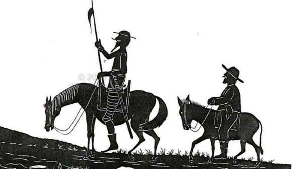

El Quijote
Tu blog de literatura
El Quijote
Tu blog de literatura
Esta es la historia de Don Quijote de La Mancha
Don Quijote de la Manchaa es una novela escrita por el español Miguel de Cervantes Saavedra. Publicada su primera parte con el título de El ingenioso hidalgo don Quijote de la Mancha a comienzos de 1605, es la obra más destacada de la literatura española
Es la primera obra genuinamente desmitificadora de la tradición caballeresca y cortés por su tratamiento burlesco. Representa la primera novela moderna y la primera novela polifónica; como tal, ejerció un enorme influjo en toda la narrativa europea.
Suscribete y dale like